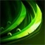
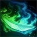
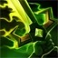
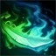
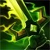

Master Yi
Master Yi treinou seu corpo e afiou sua mente para que pensamento e ação se tornassem quase um só. Embora ele prefira recorrer à violência como último recurso, a leveza e a velocidade de sua espada garantem uma resolução sempre veloz. Como um dos últimos praticantes da arte ioniana do Wuju, Yi dedicou sua vida a preservar o legado de seu povo, avaliando potenciais discípulos com as Sete Lentes da Perspicácia para identificar qual deles era o mais digno.
Splash Art do campeão:

Habilidades do campeão:
 



Para retornar para a página principal clique aqui!